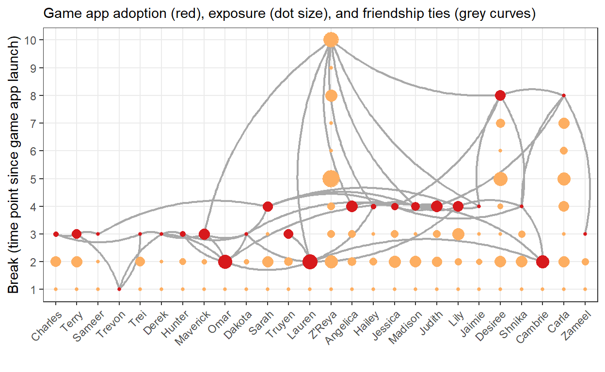
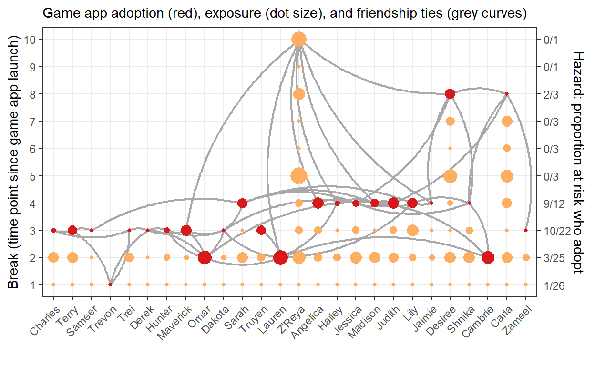
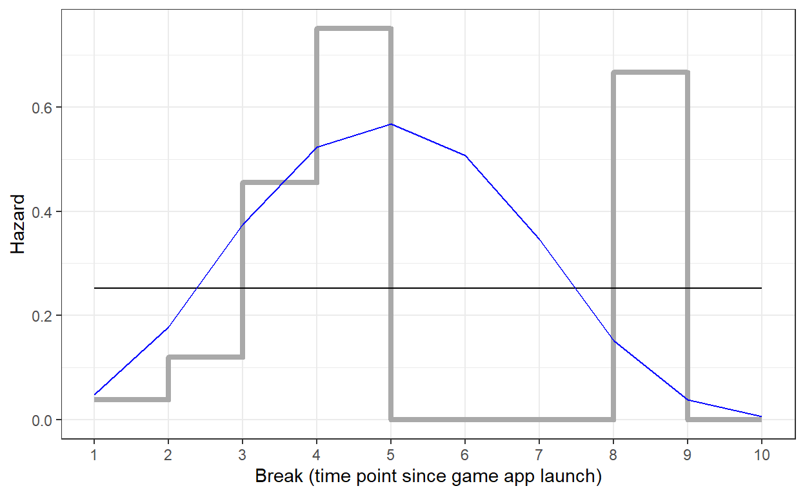

In Session 3 we tested whether the adoption of a new game app depends on previous adoption by friends and game app use by playmates.

Let us assume that the game app was promoted by a huge advertisement campaign in the media just before the first break for which we collected our data.
In Session 3, we ignored the time it takes a new product like the game app to be accepted by pupils (and their parents, who have to consent to installing it). Some pupils (and parents) are more open to the new product (early adopters), others tend to wait and have to negotiate longer.
Compare this to becoming ill from an infection. Once a virus enters your body, it starts to multiply. It takes some time before the virus bothers your body so much that you start feeling ill.
Probably, the from-infection-to-illness process is the same for all human beings. But the process can be faster and the illness more profound for some people than for other people.
Epidemiologists try to predict the speed of the process. Which characteristics of a person (age, having a good immune system, being vaccinated) tend to go together with low speed of becoming ill? Does the speed become so low for some people that they do not show illness symptoms at all?
This brings us to a class of models called event history models, which are often used to model the diffusion of innovations.
The advertisement campaign (before Break 1) starts the event history clock. From this moment every pupil is at risk of adopting the new game app.
Event history models analyze hazards. The hazard of experiencing an event is the probability to experience the event if you have not yet experienced it in the current episode. The people who have not experienced the event yet constitute the risk set.

Exercise
In the last break for which we have data, pupil Z’Reya still has not adopted the game app. From the event history perspective, the adoption process may still be going on for her. Perhaps, she is still negotiating with her parents or saving money to buy the game app.
Z’Reya is an example of a right-censored observation. One of the strong points of event history models is that they handle right-censored cases correctly. Event history models do not assume that Z’Reya will never adopt. Perhaps she will!
We are interested in adoption as a time process. How does the hazard of adopting the game app change over time?
Evidence from marketing suggests that a new product initially has few adopters (early-adopters), then many adopters (early/late majority), and finally few customers who take a long time to adopt (laggards). If openness to new products is a general personality trait, we may expect such a pattern also for the adoption of the new game app by our pupils.
We usually do not have theory or previous research telling us the exact shape of the baseline hazard function. Instead, we estimate it from our data:

This figure shows baseline hazard functions, that is, how hazards change over time (breaks):
Note that the risk set is very small after Break 4,containing only 3 pupils. A proportion of adopters calculated on a small number tends to be extreme: very low or very high. Don’t take such a proportion too seriously.
Exercise
We can use logistic regression to estimate a baseline hazard function.
Remember a hazard is:
# Estimate adoption from time (variable: breakID).
model1 <- glm(
adoption ~ 1, #no time predictor, only constant
data = diffusion_data,
family = binomial(link = "logit")
)
model2 <- glm(
adoption ~ breakID + I(breakID^2), #time and time squared for a parabola (curve)
data = diffusion_data,
family = binomial(link = "logit")
)
# Collect observed and (average) predicted baseline functions and graph them.
hazards <- diffusion_data %>%
#calculate observed probability as proportion of adoptions per break
group_by(breakID) %>%
summarise(obs_prop = mean(adoption)) %>%
#add columns (variables) with the predicted hazards for models 1 and 2
# note that breakID is the only independent/predictor variable in the models
bind_cols(
model1_hazards = predict(model1, newdata = data.frame(breakID = 1:10), type = "response"),
model2_hazards = predict(model2, newdata = data.frame(breakID = 1:10), type = "response")
)
# Plot the observed and predicted hazard functions.
ggplot(data = hazards, aes(x = breakID)) +
#observed hazards:
geom_step(aes(y = obs_prop), color = "darkgrey", size = 1.5) +
#hazards predicted by model 1:
geom_line(aes(y = model1_hazards), color = "black") +
#hazards predicted by model 2:
geom_line(aes(y = model2_hazards), color = "blue") +
scale_x_continuous(name = "Break (time point since game app launch)", breaks = 1:10, minor_breaks = NULL) +
labs(y = "Hazard") +
theme_bw()Exercises
breakID as predictor). Is this baseline hazard function intuitively plausible?breakID, I(breakID^2), I(breakID^3), and I(breakID^4) as predictors). Is this baseline hazard function intuitively more or less plausible than the quadratic baseline function?The baseline hazard function represents the speed at which the game app is adopted by pupils over time. Does a pupil’s sex, exposure to playmates using the game app, or friends who adopted the game app previously speed up (or slow down) the adoption process?
Just add predictors to the logistic regression model used to estimate the baseline hazard function.
# Estimate adoption from time (variable: breakID) and substantive predictor(s).
model <- glm(
adoption ~ breakID + I(breakID^2) + sex,
data = diffusion_data,
family = binomial(link = "logit")
)
# Numerical summary of results.
summary(model)
# Predict hazards for two types of pupils.
hazards <- data.frame(
breakID = 1:10,
hazards1 = predict(model, newdata = data.frame(breakID = 1:10, sex = rep(0, 10)), type = "response"),
hazards2 = predict(model, newdata = data.frame(breakID = 1:10, sex = rep(1, 10)), type = "response")
)
# Plot the predicted hazard functions.
ggplot(data = hazards, aes(x = breakID)) +
geom_line(aes(y = hazards1), color = "black") +
geom_line(aes(y = hazards2), color = "blue") +
scale_x_continuous(name = "break (time point since game app launch)", breaks = 1:10, minor_breaks = NULL) +
labs(y = "hazard") +
theme_bw()Exercises
Interpret the numerical output and plot. What do they tell you?
Add the variable exposure as a predictor to the model and plot predicted hazard functions for boys with zero exposure and boys who score 50 on exposure. Tip: Adjust both the formula in the glm() function and the data.frame() argument in the predict() functions (see Session 3).
Change the baseline hazard function, for example, to no time effect or a quartic time function (see the previous topic in this session).
The typical adoption process of few early adopters, many majority adopters, and few laggards may be due to personal adoption propensities as marketeers tend to assume.
However, it may also result from network effects such as contagion or peer influence. At first, we have few adopters. Each of them influence some peers to adopt, and so on, yielding a snowballing effect of increasing numbers of adopters and an increasingly smaller risk set of pupils who can still adopt.
When we estimate the baseline hazard function from the data, it can be hard to distinguish between time and network effects in small samples. The time effect (hazard function) may incorporate part of the network effects because it is too much tailored to the data (overfitted).
It is better to have a larger sample, several samples (adoption of the same game app in several classes), and preferably adoption processes of several innovations or products by the same participants. With several adoption processes within the same network, a multilevel model can tease out the personal adoption propensities (as we learned in Session 2).
Event history models make us reflect on the role of time in the diffusion or network processes that we are studying.
The two important questions are:
If your answers are Yes, an event history model may be what you are looking for.
This session only discusses a discrete-time event history model. Here, we have a limited number of time points at which events may happen. In our example, adoption of the game app can only happen between breaks and we do not care (and have no information on) when it exactly happens.
If we have the (more or less) precise time at which an event happens, for example, because server data tell us in which second a person sent a chat message, we need a continuous-time event history model. These models cannot be estimated with logistic regression. They are a bit ore complex but the basic ideas remain the same.
Rogers, E. M. (1962). Diffusion of Innovations (4th ed.). Free Press. The classic text on the diffusion of innovations through networks.
Valente, T. W. (1995). Network Models of the Diffusion of Innovations. Hampton Press. offers a more recent and accessible overview.
Singer, J. D., & Willett, J. B. (2003). Applied Longitudinal Data Analysis. Modeling Change and Event Occurrence. Oxford University Press. Part II of this book offers an elaborate but accessible discussion of event history models.